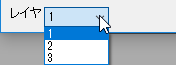
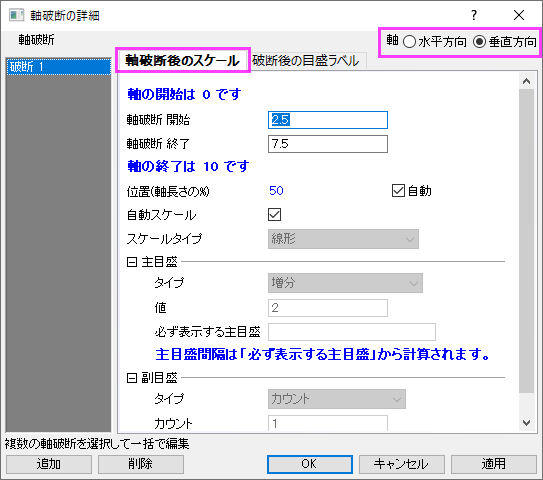
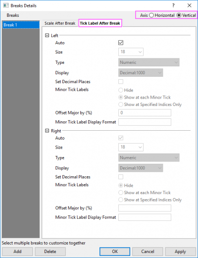

Origin 2023から、右Y軸と左Y軸の両方を表示し、表示タブで各軸を再スケールを設定すると、左と右の2つの垂直アイコンが表示され、左Y軸と右Y軸の軸破断を個別に追加して編集できます。
このタブでは、垂直または水平方向の軸破断を追加、編集できます。
Origin 2023から、右Y軸と左Y軸の両方を表示し、表示タブで各軸を再スケールを設定すると、左と右の2つの垂直アイコンが表示され、左Y軸と右Y軸の軸破断を個別に追加して編集できます。 |
軸破断の編集前に、複数レイヤグラフのレイヤ切り替えにレイヤリストを使用できます。 
Note: 目盛ラベル表が有効になっている場合、時期破断は使用できません。
| 有効にする |
チェックを付けると軸破断を表示できます。 |
|---|---|
| 軸破断記号の長さ |
軸判断記号の半分の長さを指定します。 <自動>にすると、主目盛間の長さが軸破断の半分の長さになります。 |
| 軸破断の数 |
1から7の間で軸に表示する破断の数を選択します。 軸破断の数を指定すると、詳細ダイアログの軸破断のセクションの下に対応した数の軸破断＃が表示されます。 |
軸破断がグラフ軸に追加されたら、軸破断をクリックして開くミニツールバーのボタンを使用して、破断シンボルの長さ、シンボルのギャップ、シンボルの形状などを変更できます。 |
現在の軸破断の設定がこのボックス内に表示されます。それぞれの破断について4つの設定欄で指定できます。
軸破断範囲の開始スケール値を指定します。
軸破断範囲の終了スケール値を指定します。
軸上の破断位置を自動で決定するか指定します。破断位置をカスタマイズする場合は、このチェックを外して、位置列に値を指定します。
Originでは、破断を自動配置する2つのメカニズムがサポートされています。
自動位置チェックボックスが選択されていないときのみこのセルを編集できます。
軸上の破断位置を決定します。この値は、軸の長さに対するパーセント単位です。例えば、このボックスに50 を入力した場合、軸の中心位置に軸破断が作成されます。必要に応じて、Originが破断の両側のスケールを変更し、指定された位置に破断を配置します。
表示ボックスの下に2つのボタンがあります。
| 削除 | 表示ボックス内に1つ以上の軸破断がある時に利用可能なボタンです。選択された軸破断を削除します。複数選択する場合、Ctrlキーを押しながら削除したい軸破断の項目をクリックすることで選択できます。 |
|---|---|
| 詳細... | このボタンをクリックすると、軸破断の詳細ダイアログが開き、破断を詳細に編集できます。 |
このダイアログは、軸ダイアログの軸破断タブにある、詳細…ボタンをクリックすると開きます。
このダイアログを開くと、メインの軸ダイアログは非表示になります。適用ボタンをクリックして、メインの軸ダイアログに戻らずに、このダイアログでの変更のみ適用できます。OKボタンをクリックすると、設定が保存されてダイアログが閉じられます。キャンセルボタンをクリックすると、このダイアログは閉じられて、メインの軸ダイアログを表示します。 |
このダイアログには、軸破断の編集に使用する2つのタブがあります。
 |
 |
右上のラジオボタンで軸を切り替えて軸破断の編集が可能です。
表示タブで左軸と右軸の両方を表示し、各軸を再スケールに設定すると、垂直方向のオプションが左軸と右軸の2つのオプションに分けられて、それぞれの軸で破断を個別に編集できます。
このタブでは、破断後のスケールを編集できます。
| 軸破断 開始 | 軸破断範囲の開始スケール値を指定します。 |
|---|---|
| 軸破断 終了 | 軸破断範囲の終了スケール値を指定します。 |
| 位置(軸長さの%) | この制御は軸破断タブの自動位置と位置セルと同じです。
自動チェックボックスが選択されていないときのみこのセルを編集できます。 軸上の破断位置を決定します。この値は、軸の長さに対するパーセント単位です。例えば、このボックスに50 を入力した場合、軸の中心位置に軸破断が作成されます。必要に応じて、Originが破断の両側のスケールを変更し、指定された位置に破断を配置します。 |
| 自動スケール | 自動スケールにチェックを付けると、軸破断後のスケールは、スケールページに従います。このチェックボックスはデフォルトで選択されています。 |
| スケールタイプ |
破断後のスケールタイプを指定します（このページのタイプの表を参照してください）。 自動チェック（上述）が外れているときのみ利用できます。 |
| 主目盛 |
主目盛のタイプ、値、必ず表示する主目盛を設定します（主目盛のセクションを参照してください）。 自動チェック（上述）が外れているときのみ利用できます。 |
| 副目盛 |
副目盛のタイプを指定します(副目盛 セクションを参照してください)。 自動チェック（上述）が外れているときのみ利用できます。 |
このタブで破断後の（下/上/左/右）軸目盛ラベルを編集します。軸を切り替えてそれぞれの目盛ラベルを編集できます。
| 自動 | 自動のチェックボックスが選択されると、軸破断後の目盛ラベルの設定は、目盛ラベルページに従います。このチェックボックスはデフォルトで選択されています。 |
|---|---|
| フォント | 破断後の主目盛ラベルのフォントサイズを変更できます。 |
| タイプ |
破断後のラベルタイプを指定します（このページのタイプの表を参照してください）。このドロップダウンリストは、上述の自動チェックボックスのチェックが外れているときのみ利用できます。 |
| 表示/ データセット名 |
目盛ラベルがどのように表示されるか指定します。このドロップダウンリストの内容はタイプドロップダウンリストで選択した項目によって異なります。自動チェック（上述）が外れているときのみ利用できます。 |
| 小数点以下の桁数の設定 |
破断後の主目盛ラベルの小数点以下の桁数を設定できます。 |
| 副目盛ラベル | 自動チェック（上述）が外れているときのみ利用できます。
|
| 主ラベルのオフセット(%) |
副目盛ラベルが表示されているときに主軸から指定した距離だけ主目盛ラベルを移動します。この値は、フォントの高さに対するパーセント単位です。 |
| 副目盛ラベルの表示形式 |
このボックスを使用して、副目盛ラベルの表示形式を制御します。表示フォーマットオプション（日付と時間の表示を含む）のリストについては、 LabTalkヘルプファイルのOriginのフォーマットをご覧ください。 |